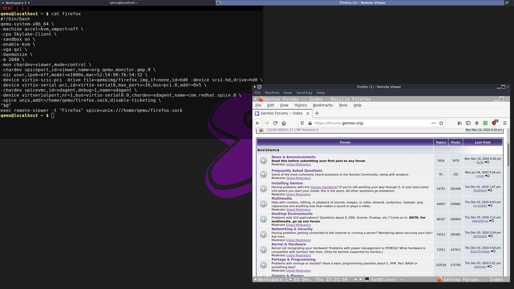

Account / Permission
Create a user / group which will run the virtual system qemu, add the qemu user into the kvm group
useradd qemu
passwd qemu
usermod -a -G kvm qemu
Quick setting up an sandboxing using Qemu : isolation of your application inside a virtual system qemu, without libvirt with spice support mouse passtrough host <-> guest (Copy / Paste from your system to the virtual system)
Create a user / group which will run the virtual system qemu, add the qemu user into the kvm group
useradd qemu
passwd qemu
usermod -a -G kvm qemu
Download the install image of the system of your choice
Alpine doesn't have spice-vdagent (can be build from source but must be patched for musl), I use mostly devuan as system
Create the hard drive image for the system
qemu-img create -f qcow2 firefox.img 20G
Template of the virtual system
firefox.sh
#!/bin/bash
qemu-system-x86_64 \
-machine accel=kvm,vmport=off \
-cpu Skylake-Client \
-sandbox on \
-vga qxl \
-daemonize \
-m 2048 \
-mon chardev=viewer,mode=control \
-chardev spiceport,id=viewer,name=org.qemu.monitor.qmp.0 \
-nic user,ipv6=off,model=e1000e,mac=52:54:98:76:54:32 \
-device virtio-scsi-pci -drive file=qemuimg/firefox.img,if=none,id=hd0 -device scsi-hd,drive=hd0 \
-chardev spicevmc,id=vdagent,debug=1,name=vdagent \
-device virtio-serial-pci,id=virtio-serial0,max_ports=16,bus=pci.0,addr=0x5 \
-device virtserialport,nr=1,bus=virtio-serial0.0,chardev=vdagent,name=com.redhat.spice.0 \
-spice unix,addr=/home/qemu/firefox.sock,disable-ticketing \
"$@"
exec remote-viewer -t "Firefox" spice+unix:///home/qemu/firefox.sock
Details of the above
-machine accel=kvm,vmport=off: We want the kvm accelerator and disable the vmware port (default is on)
-cpu : If you are unsure here, remove this line. qemu-system-x86_64 -cpu help for the full cpu list supported
-sandbox on : Enable seccomp
-vga qxl : Recommended VGA driver for spice
-daemonize : qemu-system-x86_64 will be demonize which will allow us to run the external viewer spice
-m 2048 : ram
-mon chardev=viewer,mode=control : Enable the options Machine in the remote viewer (Pause/Reset/PowerOff)
-chardev spiceport,id=viewer...: Same as above
-nic user,ipv6=off,model=e1000e,mac=52:54:98:76:54:32 : Setup the network hardware
-device virtio-scsi-pci... : Setup the hard drive hardware
chardev spicevmc,id=vdagent,debug=1... Until com.redhat.spice.0 : For spice (this is the default settings, it work should as it is)
-spice unix,addr=/home/qemu/firefox.sock,disable-ticketing : Unix socket as connection to spice / disable-ticketing to allow connection without being authentificate
exec remote-viewer : Connection the remote viewer spice
To install your system with the install disk, you will have to temporarily add :
-cdrom pathto.iso \
-boot d \
Once the system is installed remove those.
You can create as many virtual system following those simple steps.
